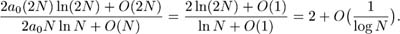
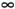
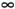
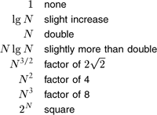

|
We use the O-notation for three distinct purposes:
To bound the error that we make when we ignore small terms in mathematical formulas To bound the error that we make when we ignore parts of a program that contribute a small amount to the total being analyzed To allow us to classify algorithms according to upper bounds on their total running times
We consider the third use in Section 2.7, and discuss briefly the other two here.
The constants c0 and N0 implicit in the O-notation often hide implementation details that are important in practice. Obviously, saying that an algorithm has running time O(f(N)) says nothing about the running time if N happens to be less than N0, and c0 might be hiding a large amount of overhead designed to avoid a bad worst case.
We would prefer an algorithm using N2 nanoseconds over one using log N centuries, but we could not make this choice on the basis of the O-notation.
Often, the results of a mathematical analysis are not exact, but rather are approximate in a precise technical sense: The result might be an expression consisting of a sequence of decreasing terms. Just as we are most concerned with the inner loop of a program, we are most concerned with the leading terms (the largest terms) of a mathematical expression. The O-notation allows us to keep track of the leading terms while ignoring smaller terms when manipulating approximate mathematical expressions, and ultimately allows us to make concise statements that give accurate approximations to the quantities that we analyze.
Some of the basic manipulations that we use when working with expressions containing the O-notation are the subject of Exercises 2.20 through 2.25. Many of these manipulations are intuitive, but mathematically inclined readers may be interested in working Exercise 2.21 to prove the validity of the basic operations from the definition. Essentially, these exercises say that we can expand algebraic expressions using the O-notation as though the O were not there, then can drop all but the largest term. For example, if we expand the expression
(N+ O(1))(N + O(log N) + O(1)),
we get six terms
N2 + O(N) + O(N log N) + O(log N) + O(N) + O(1),
but can drop all but the largest O-term, leaving the approximation
That is, N2 is a good approximation to this expression when N is large. These manipulations are intuitive, but the O-notation allows us to express them mathematically with rigor and precision. We refer to a formula with one O-term as an asymptotic expression.
For a more relevant example, suppose that (after some mathematical analysis) we determine that a particular algorithm has an inner loop that is iterated NHN times on the average, an outer section that is iterated N times, and some initialization code that is executed once.
Suppose further that we determine (after careful scrutiny of the implementation) that each iteration of the inner loop requires a0 nanoseconds, the outer section requires a1 nanoseconds, and the initialization part a2 nanoseconds. Then we know that the average running time of the program (in nanoseconds) is
But it is also true that the running time is
This simpler form is significant because it says that, for large N, we may not need to find the values of a1 or a2 to approximate the running time. In general, there could well be many other terms in the mathematical expression for the exact running time, some of which may be difficult to analyze. The O-notation provides us with a way to get an approximate answer for large N without bothering with such terms.
Continuing this example, we also can use the O-notation to express running time in terms of a familiar function, ln N. In terms of the O-notation, the approximation in Table 2.3 is expressed as HN = ln N + O(1). Thus, a0N ln N + O(N) is an asymptotic expression for the total running time of our algorithm. We expect the running time to be close to the easily computed value 2a0N ln N for large N. The constant factor a0 depends on the time taken by the instructions in the inner loop.
Furthermore, we do not need to know the value of a0 to predict that the running time for input of size 2N will be about twice the running time for input of size N for huge N because

That is, the asymptotic formula allows us to make accurate predictions without concerning ourselves with details of either the implementation or the analysis. Note that such a prediction would not be possible if we were to have only an O-approximation for the leading term.
The kind of reasoning just outlined allows us to focus on the leading term when comparing or trying to predict the running times of algorithms. We are so often in the position of counting the number of times that fixed-cost operations are performed and wanting to use the leading term to estimate the result that we normally keep track of only the leading term, assuming implicitly that a precise analysis like the one just given could be performed, if necessary.
When a function f(N) is asymptotically large compared to another function g(N) (that is, g(N)/f(N) 0 as N ), we sometimes use in this book the (decidedly nontechnical) terminology about f(N) to mean f(N)+O(g(N)). What we seem to lose in mathematical precision we gain in clarity, for we are more interested in the performance of algorithms than in mathematical details. In such cases, we can rest assured that, for large N (if not for all N), the quantity in question will be close to f(N). For example, even if we know that a quantity is N(N – 1)/2, we may refer to it as being about N2/2. This way of expressing the result is more quickly understood than the more detailed exact result, and, for example, deviates from the truth only by 0.1 percent for N = 1000. The precision lost in such cases pales by comparison with the precision lost in the more common usage O(f(N)). Our goal is to be both precise and concise when describing the performance of algorithms. 0 as N ), we sometimes use in this book the (decidedly nontechnical) terminology about f(N) to mean f(N)+O(g(N)). What we seem to lose in mathematical precision we gain in clarity, for we are more interested in the performance of algorithms than in mathematical details. In such cases, we can rest assured that, for large N (if not for all N), the quantity in question will be close to f(N). For example, even if we know that a quantity is N(N – 1)/2, we may refer to it as being about N2/2. This way of expressing the result is more quickly understood than the more detailed exact result, and, for example, deviates from the truth only by 0.1 percent for N = 1000. The precision lost in such cases pales by comparison with the precision lost in the more common usage O(f(N)). Our goal is to be both precise and concise when describing the performance of algorithms.
In a similar vein, we sometimes say that the running time of an algorithm is proportional to f(N) when we can prove that it is equal to cf(N)+g(N) with g(N) asymptotically smaller than f(N). When this kind of bound holds, we can project the running time for, say, 2N from our observed running time for N, as in the example just discussed. Figure 2.3 gives the factors that we can use for such projection for functions that commonly arise in the analysis of algorithms. Coupled with empirical studies (see Section 2.1), this approach frees us from the task of determining implementation-dependent constants in detail. Or, working backward, we often can easily develop an hypothesis about the functional growth of the running time of a program by determining the effect of doubling N on running time.
Predicting the effect of doubling the problem size on the running time is a simple task when the running time is proportional to certain simple functions, as indicated in this table. In theory, we cannot depend on this effect unless N is huge, but this method is surprisingly effective. Conversely, a quick method for determining the functional growth of the running time of a program is to run that program empirically, doubling the input size for N as large as possible, then work backward from this table.

|